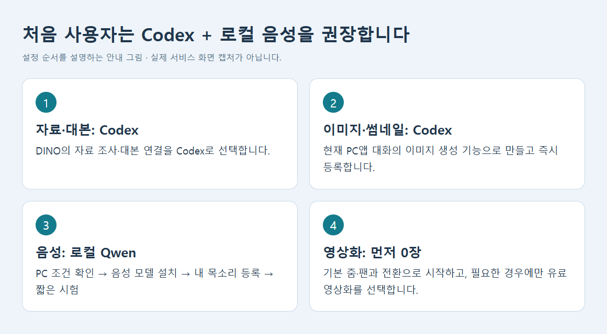
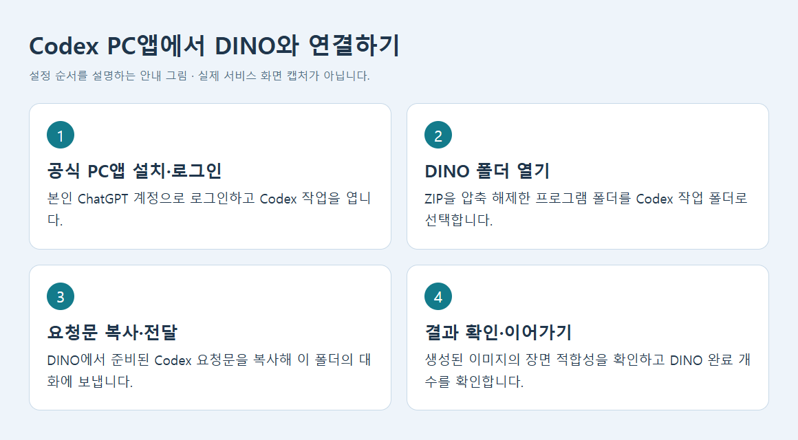
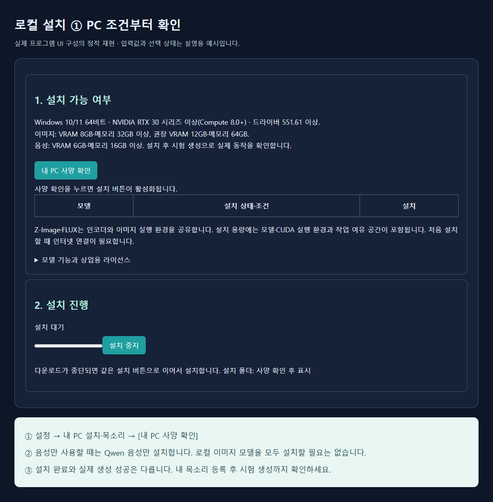
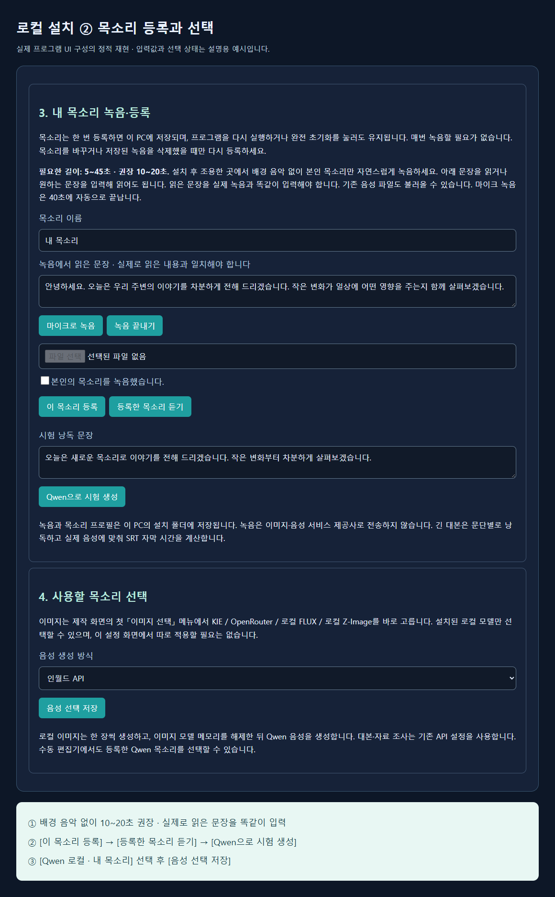
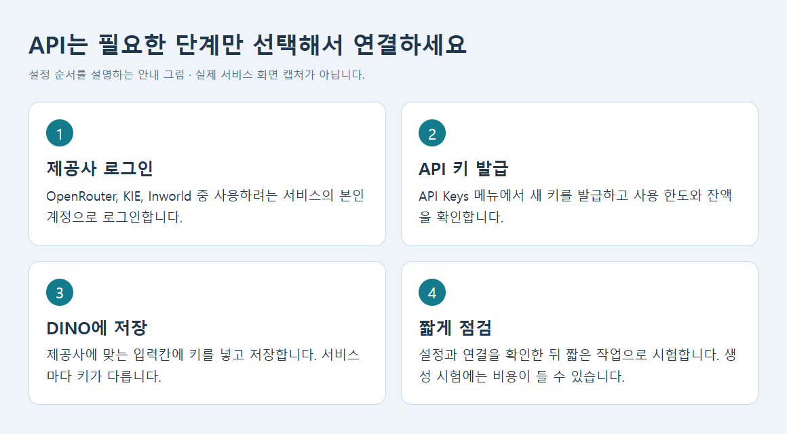
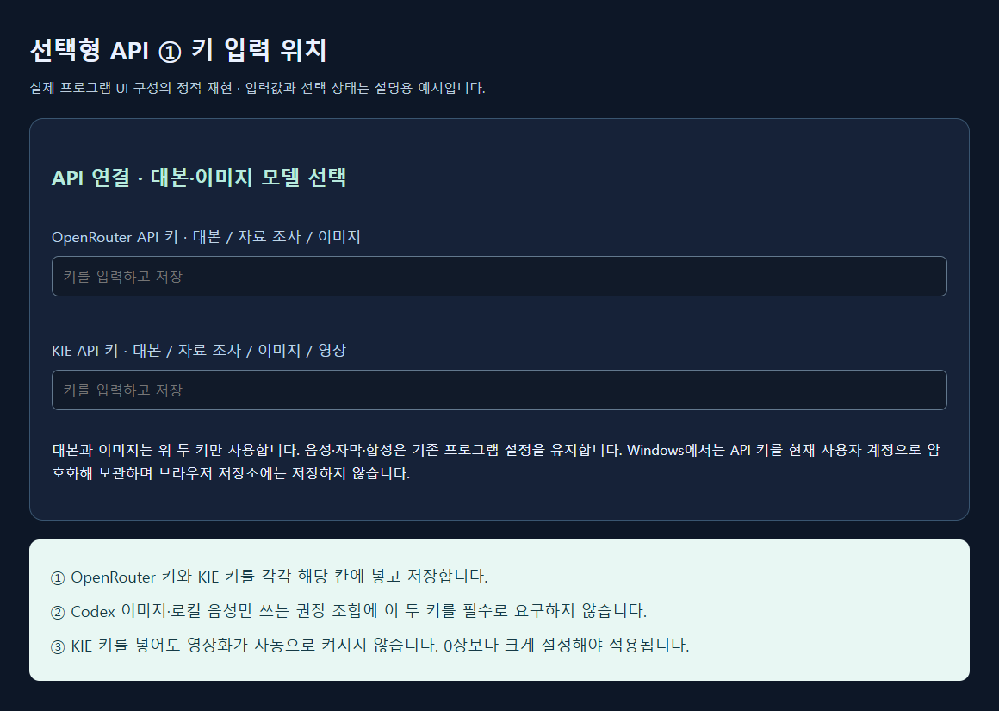
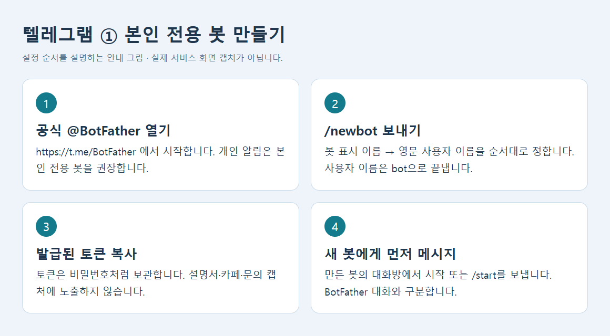
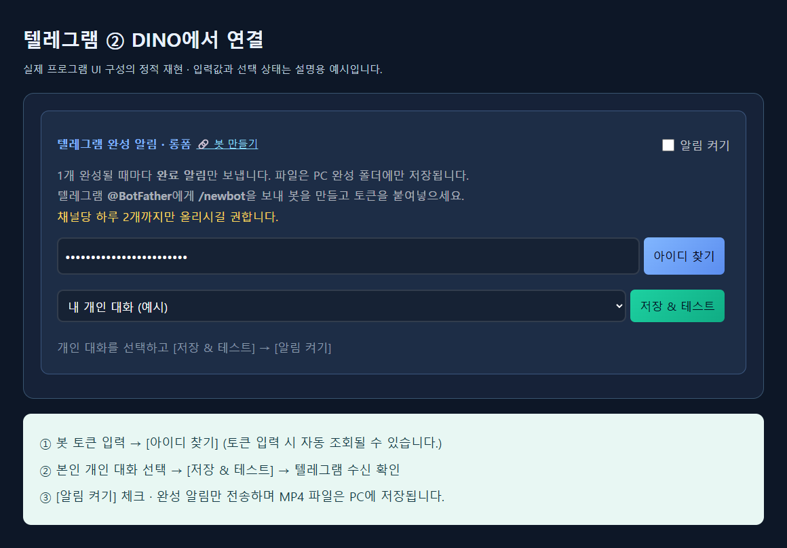

01. 처음 오셨다면 여기부터
처음 사용자는 DINO 13.2 몰입형의 Codex 제작 방식과 로컬 음성을 권장합니다.
Dropshot과 Inworld 유료 가입부터 시작할 필요는 없습니다. 먼저 아래 권장 조합으로 짧은 영상을 완성한 뒤, 움직이는 장면이나 클라우드 음성이 필요할 때 해당 서비스를 선택하세요. 로컬 음성은 PC 조건을 충족해야 합니다.

| 제작 단계 | 처음 사용자 권장 선택 | 준비할 것 |
|---|---|---|
| 자료 조사·대본 | Codex · PC앱 대화 | 본인 계정, DINO 폴더를 연 대화 |
| 이미지·썸네일 | Codex · 이미지 생성 연결 | 이미지 생성 기능을 사용할 수 있는 대화 |
| 음성 | 로컬 Qwen · 내 목소리 | 지원 PC, 모델 설치, 등록한 목소리 |
| 앞장면 영상화 | 0장으로 시작 | 정지 장면에 기본 줌·팬과 부드러운 전환 |
전용 카페 열기 · 카페 공지와 세팅 영상을 설명서와 함께 보시면 편합니다. 로그인·가입 또는 이용 권한이 필요한 경우 안내에 따라 진행하세요.
제품명은 DINO 13.2 몰입형입니다. Codex는 이 프로그램과 연결해서 쓰는 PC앱의 제작 기능입니다. 내부 파일의 R3/R5/v12 표기는 기능 규약 또는 저장 폴더 이름으로, 별도 판매 버전을 뜻하지 않습니다.
02. 전용방·카페·세팅 영상
전용방 주소: https://open.kakao.com/o/g2JmdMJi
방 입장 비밀번호: 777888
전용 카페: https://cafe.naver.com/dinoprouser
- 전용방 링크를 열고 입장 비밀번호를 입력하세요.
- 입장 후 공지와 전용 카페 안내를 확인하세요.
- 카페에서 초기 세팅 영상을 먼저 보고, 이 설명서의 Codex·로컬 음성·텔레그램 순서를 따라 설정하세요.
- 메뉴나 제공사 화면이 달라졌다면 최신 카페 공지를 먼저 확인하세요. 세팅 영상의 직접 게시물 주소는 공지에서 확인합니다.
방 입장 비밀번호는 카카오방 입장용입니다. DINO 구독 인증, 관리자 점검, API 키, 텔레그램 봇 토큰과는 각각 다릅니다. 문의 시에는 제품명·실패 단계·오류 문구를 알려 주시고 개인 키와 토큰은 가려 주세요.
03. ZIP 설치·구독 인증·업데이트
- 받은 ZIP을 새 폴더에 전체 압축 해제하세요. ZIP 내부에서 바로 실행하지 마세요.
- 기존 DINO 작업을 저장하고 기존 프로그램을 종료한 뒤 새 폴더의
00_실행.cmd를 실행하세요. 실행 파일과 연결보조·필수 프로그램 파일을 함께 보관하세요. - 롱폼 또는 쇼츠를 선택하고 구독 결제에 사용한 이메일로 인증하세요.
- 화면의 구독 남은 기간과 만료일을 확인하세요. 본인의 유효한 구독이 있어야 제작 기능을 사용할 수 있습니다.
- 설정에서 아래 권장 조합을 저장하고 짧은 시험 제작을 하세요. 프로그램이 실제로 연 주소의 탭을 재사용하세요. 기존 작업 탭을 여러 개 열지 마세요.
구독 만료 후 제작 기능은 차단됩니다. 로컬 기능을 선택해도 DINO 구독 인증은 필요합니다. 이미 저장한 완성 파일은 보관됩니다. 다른 PC에서는 그 사용자의 구독과 본인 계정 설정이 필요합니다.
| 비용 구분 | 확인할 내용 |
|---|---|
| DINO | 프로그램 구독 이용 기간 |
| Codex | 본인 ChatGPT 계정의 기능 접근과 사용량·한도. 무제한·무료 이용을 보장하지 않습니다. |
| 로컬 음성·이미지 | PC 자원·전력·저장 공간, 최초 모델 다운로드 |
| 선택형 API·Dropshot | 제공사 계정·요금·크레딧. DINO 구독과 별도입니다. |
04. Codex PC앱 설치·DINO 연결
OpenAI 공식 PC앱 설치 안내와 공식 시작 안내를 이용하세요. PC앱을 설치하고 본인 ChatGPT 계정으로 로그인한 다음, Codex에서 압축을 푼 DINO 폴더를 작업 폴더로 여세요. 앱 버전에 따라 통합 PC앱에서 Codex를 선택하는 방식으로 표시될 수 있습니다.

- DINO에서 자료 조사·대본 연결 → Codex · PC앱 대화로 조사·대본 요청을 선택하세요.
- 이미지 선택 → Codex · 이미지 생성 연결을 선택하세요. 썸네일도 Codex · 배경 생성 후 한글 합성을 고르세요.
- 주제를 입력하고 전체 제작을 시작하세요. DINO의 진행 상태·완성 파일에 준비된 Codex 요청문을 복사하세요.
- 이 DINO 폴더를 열어 둔 Codex 대화에 붙여 넣어 보내세요. 자료·대본 요청에 이어 이미지 요청도 해당 대화에서 처리합니다.
- Codex가 결과를 등록하면 DINO의 완료 개수가 올라갑니다. 첫 장면의 문장 대응·캐릭터·한글을 확인하고 잘못된 장면만 고치세요.
- 이미지 요청이 많거나 사용량 제한에 도달했다면 같은 작업의 요청 파일과 완료 상태를 유지해 이어가세요. 별도 새 작업을 중복 생성하지 마세요.
DINO가 Codex 대화를 직접 시작하거나 내장 이미지 도구를 외부에서 호출하는 방식은 아닙니다. 준비된 요청문을 실제 대화에 보내야 합니다. CLI를 직접 입력하는 대신 PC앱의 대화와 동봉 도우미를 사용하는 흐름입니다.
이미지 생성 기능을 사용할 수 있는 계정·대화 환경이 필요합니다. 앱만 설치하면 모든 계정에서 같은 기능·한도가 보장되는 것은 아닙니다. OpenAI 이미지 생성 안내를 참고하세요. 앱 권한과 사용량 정책은 본인 환경을 따릅니다.
05. 로컬 세팅: 내 PC 조건 확인·설치
DINO의 설정 → 내 PC 설치·목소리를 여세요. 아래는 이 배포본 설치 화면이 적용하는 조건입니다. 모델 자체의 모든 실행 환경에 대한 일반적인 최소 사양을 뜻하지 않습니다.
| 항목 | DINO 설치 화면 기준 |
|---|---|
| 운영체제·GPU | Windows 10/11 64비트 · NVIDIA RTX 30 시리즈 이상(Compute 8.0+) · 드라이버 551.61 이상 |
| 로컬 Qwen 음성 | VRAM 6GB 이상 · 메모리 16GB 이상 |
| 로컬 이미지 | VRAM 8GB·메모리 32GB 이상. 권장 VRAM 12GB·메모리 64GB |
| 저장 공간·인터넷 | 사양 확인 결과의 모델·실행 환경·작업 여유 공간을 확보하세요. 최초 다운로드에는 인터넷이 필요합니다. |

- 내 PC 사양 확인을 눌러 GPU·VRAM·RAM·저장 공간과 설치 가능 여부를 확인하세요.
- 처음 사용자 권장 조합에서는 Qwen 음성부터 설치하세요. Codex 이미지 사용을 위해 Z-Image·FLUX를 함께 설치할 필요는 없습니다.
- 다운로드와 설치가 끝날 때까지 기다리세요. 설치가 중단되면 같은 항목에서 이어 설치하세요. 기존 정상 모델과 등록 목소리를 먼저 삭제하지 마세요.
- 설치 완료 후 아래 목소리 등록과 시험 생성을 진행하세요. 설치 인식만으로 실제 생성 성공을 판단하지 마세요.
로컬 설치가 어렵다면 동봉된 로컬 설치 요청문 TXT를 Codex에 보내세요. PC 조건·기존 설치를 확인하고 필요한 항목만 공식 설치 기능으로 설치·연결하도록 요청하는 문장입니다.
Codex에 보낼 로컬 음성 세팅 요청문
이 DINO 폴더에서 Codex 이미지와 로컬 Qwen 음성을 쓰고 싶어. 내 PC의 Windows, GPU·VRAM, RAM, 디스크 여유 공간과 기존 설치부터 확인해줘. DINO의 내 PC 설치·목소리에서 지원하는 Qwen 음성만 필요한 항목을 설치·연결해줘. 기존 인증, API 키, 작업, 정상 모델과 등록한 목소리는 보존해줘. 본인 목소리 등록이 필요한 단계는 화면에서 안내하고, 등록 후 짧은 시험 음성을 확인해줘. 키·토큰·개인 녹음 내용을 채팅에 출력하지 말고, PC가 지원하지 않으면 실제 부족한 조건을 알려줘.
이미지를 완전히 로컬로 만들려는 경우에만 이미지 모델을 추가 설치하세요. Z-Image Turbo는 이 화면에서 레퍼런스 미지원, FLUX.2 klein 4B는 레퍼런스 1장 지원으로 구분합니다. 로컬 이미지 모델은 한글 표현과 캐릭터 재현을 결과물에서 따로 확인해야 합니다.
06. 내 목소리 녹음·등록·시험

- 조용한 곳에서 배경 음악 없이 본인의 목소리만 녹음하세요. 허용 길이는 5~45초, 권장은 10~20초입니다. 마이크 녹음은 40초에 자동 종료됩니다.
- 목소리 이름을 정하고 녹음에서 읽은 문장을 실제 낭독과 똑같이 입력하세요. 단어를 빼거나 다른 문장을 넣지 마세요.
- 마이크로 녹음 → 녹음 끝내기를 누르거나 기존 음성 파일을 불러오세요.
- 본인 목소리 확인란을 확인하고 이 목소리 등록을 누르세요. 등록한 목소리 듣기로 원본 녹음 상태를 확인하세요.
- 새로운 짧은 문장을 입력하고 Qwen으로 시험 생성하세요. 발음·잡음·반복·누락을 들어 보세요.
- 음성 생성 방식 → Qwen 로컬 · 내 목소리에서 등록한 목소리를 선택하고 음성 선택 저장을 누르세요. 제작 설정의 음성도 로컬로 선택됐는지 확인하세요.
등록한 목소리는 같은 PC에 저장됩니다. 매번 녹음할 필요가 없습니다. 다른 사람에게 배포할 ZIP에 개인 녹음과 목소리 프로필을 넣지 마세요. 사용할 권한이 있는 목소리만 등록하세요.
07. 첫 영상 제작: 짧게 완성해 보기
- 주제 또는 직접 대본을 넣고 언어·화풍·분량을 선택하세요. 처음에는 짧은 분량으로 세팅부터 확인하세요.
- 자료·대본과 이미지·썸네일은 Codex, 음성은 로컬, 영상화 장면 수는 0으로 설정하세요.
- 캐릭터가 필요한 경우 레퍼런스 이미지 넣기로 등록하세요. 얼굴·안경·수염·기본 의상은 유지하되 같은 장소·정면 구도만 반복하지 않도록 확인하세요.
- 전체 제작 후 표시되는 자료·대본 요청과 이미지 요청을 Codex 대화에 전달하세요.
- 장면별 완료 개수와 오류를 확인하세요. 실패한 장면은 해당 장면만 재생성하고 전체를 다시 시작하지 마세요.
- 음성·자막을 확인한 뒤 최종 편집하세요. 정지 장면의 기본 줌·팬, 부드러운 교차 전환과 자막 안전 영역을 확인하세요.
- 최종 MP4를 직접 재생하고 썸네일·제목·설명·출처·태그를 함께 확인하세요.
몰입형은 시청자에게 직접 말하는 공감 해설과 문장에 맞는 다양한 화면 구성을 뜻합니다. 모든 장면에 해설자를 넣거나 이름 있는 가상 인물의 긴 이야기를 기본으로 만드는 방식이 아닙니다. 목표 시간을 채우기 위한 반복은 피하고, 실제 길이는 생성된 음성을 기준으로 확인하세요.
08. API 발급 공통 순서·입력 위치
아래 API는 선택 사항입니다. Codex와 로컬 음성 조합을 먼저 사용한 뒤 필요한 단계만 연결하세요.


- 아래 공식 링크에서 본인 계정으로 로그인하세요.
- API Keys 또는 API Key Management에서 새 키를 발급하세요. 표시 이름을 DINO용으로 구분하고 가능한 사용 한도를 설정하세요.
- 키 전체를 복사해 DINO의 해당 제공사 입력칸에 넣고 저장하세요. 키를 채팅·설명서·카페 글에 붙여 넣지 마세요.
- 사용하려는 단계의 제공사와 모델을 선택하세요. 키를 넣는 것과 특정 단계를 활성화하는 것은 별개입니다.
- 잔액·요금·실패 기록을 확인하세요. 생성 시험은 과금될 수 있습니다. KIE의 연결 점검 · 과금 없음은 생성 요청을 보내지 않는 별도 점검입니다.
| 서비스 | 발급·설정 링크 | DINO 입력 위치 |
|---|---|---|
| OpenRouter | API Keys | API 계정 → OpenRouter API 키 |
| KIE | API Key 관리 | API 계정 → KIE API 키 |
| Inworld | Inworld Portal → Settings → API Keys | 음성 → 인월드 → Basic Key, Voice ID |
| Dropshot MCP | Codex 플러그인에서 Dropshot 연결 | MCP 요청문을 Codex 대화에 전달. KIE 키 입력칸에 넣지 않습니다. |
09. OpenRouter 키 발급
- OpenRouter API Keys에서 본인 계정으로 로그인하세요.
- 새 일반 API 키를 만드세요. 자료 조사·대본·이미지 생성에는 일반 호출용 키를 사용하며 관리 전용 Management 키와 구분하세요.
- 생성된 키를 복사해 DINO API 계정 → OpenRouter API 키에 저장하세요.
- OpenRouter를 쓸 자료 조사·대본 또는 이미지 모델을 선택하세요. 잔액과 선택 모델의 요금을 확인하세요.
- 짧은 작업으로 시험하고 제공사 기록과 DINO 오류를 확인하세요. Codex 자료·대본 모드를 선택했다면 텍스트 API를 먼저 준비할 필요는 없습니다.
공식 발급 안내: OpenRouter Quickstart · 일반 키와 관리 키 구분
10. KIE 키 발급·앞장면 영상화
- KIE API Key 관리에서 본인 계정으로 로그인하고 새 키를 발급하세요.
- 키를 DINO API 계정 → KIE API 키에 저장하세요. DINO 구독과 KIE 크레딧은 별도입니다.
- 영상화 연결에서 KIE API를 선택하세요. KIE 연결 점검 · 과금 없음으로 인증·잔액·시험 이미지 업로드·읽기를 확인하세요.
- 실제 움직이는 장면이 필요한 경우에만 영상화 장면 수를 직접 1장 이상 설정하세요. 예를 들어 3장으로 설정하면 앞 3장만 적용합니다.
- 선택한 모델과 크레딧을 확인한 뒤 최종 제작을 진행하세요. 나머지 장면은 정지 이미지와 기본 줌·팬·전환을 사용합니다.
현재 기본 KIE 영상 모델은 Bytedance V1 Pro Fast로 5초·720p를 요청합니다. 실제 결과 크기와 비용은 제공사가 반환한 파일과 생성 기록을 확인하세요. 오류 후 기존 작업 번호가 있으면 같은 작업을 조회하고, 접수 여부가 불확실하면 새 유료 요청을 반복하지 마세요. KIE 작업 기록을 먼저 확인하세요.
공식: 키 발급·인증 안내 · 모델 안내 · 동봉된 KIE 문제 해결 TXT
11. Dropshot MCP·Inworld는 선택 사항
Dropshot MCP를 쓰려면
- Codex의 플러그인 목록에서 Dropshot을 연결하고 본인 Dropshot 계정으로 인증하세요. 모델별 이용 조건·크레딧을 확인하세요.
- DINO의 영상화 연결을 Dropshot MCP로 선택하고 앞에서부터 영상화할 장면 수를 지정하세요.
- 음성 이후 준비된 Dropshot 요청문을 같은 DINO 폴더의 Codex 대화에 보내세요.
- 접수된 작업 번호가 있으면 같은 작업의 결과를 이어 받으세요. 실패를 이유로 다른 유료 제공사에 자동으로 새 요청을 보내지 않습니다.
처음에는 0장으로 기본 줌·팬과 전환을 확인한 뒤 필요할 때 추가하세요. Dropshot MCP에는 Dropshot 연결이 필요하며 KIE API 키와는 별도입니다. 동봉 Dropshot 영상 사용 안내를 참고하세요.
Inworld 음성을 쓰려면
- Inworld Portal에서 본인 계정으로 로그인하세요.
- Settings → API Keys에서 TTS 호출용 키를 발급하세요. 공식 안내의 Base64 자격 증명을 그대로 복사하고 다시 Base64 변환하지 마세요.
- 음성을 미리 듣고 사용할 Voice ID를 확인하세요. 다른 사용자의 Voice ID나 키를 복사해서 사용하지 마세요.
- DINO에서 음성 → 인월드 · Voice ID를 선택하고 Basic Key와 Voice ID를 각각 입력·저장하세요.
- 짧은 문장으로 시험하세요. 권한·잔액·선택한 음성 사용 권한을 확인하세요.
처음 사용자는 지원 PC에서 로컬 Qwen 음성을 먼저 권장합니다. 로컬 조건이 부족하거나 클라우드 음성이 필요할 때 Inworld를 선택하세요. Inworld 공식 TTS 시작 안내를 참고하세요. 제공사 화면과 요금은 변경될 수 있습니다.
12. 텔레그램 완성 알림: 처음부터 자세히
권장 설정은 본인 전용 봇 → 본인 개인 대화입니다. DINO는 완성 알림을 보내며, MP4 파일은 PC 완성 폴더에 저장합니다. 텔레그램 알림은 Codex 작업 예약이나 영상 자동 공개 기능을 뜻하지 않습니다.
① 텔레그램 설치·봇 발급
- 텔레그램 공식 앱을 설치하고 본인 계정으로 로그인하세요.
- 공식 @BotFather를 열고 시작하세요.
/newbot을 보내고 표시 이름을 정하세요. 예:DINO 완성 알림.- 영문 사용자 이름을 정하세요. 다른 봇과 중복되지 않으며
bot으로 끝나야 합니다. 예시는my_dino_notice_bot이며 실제로 비어 있는 이름을 직접 정하세요. - BotFather가 발급한 토큰 전체를 복사하세요. 토큰은 봇을 제어하는 자격 증명이며 DINO 구독 비밀번호나 Chat ID가 아닙니다.
- 방금 만든 새 봇의 대화방을 여세요. BotFather 대화방이 아닙니다. 시작 버튼 또는
/start를 보내고 개인 메시지 하나를 보내세요.

② DINO 설정·시험·켜기
- DINO 설정에서 완성·알림 영역의 텔레그램 완성 알림 · 롱폼을 찾으세요. 설정을 아래로 내려야 보일 수 있습니다. 쇼츠에서도 해당 모드의 설정을 확인하세요.
- 봇 토큰 붙여넣기 칸에 토큰을 넣고 아이디 찾기를 누르세요. 정상 형식의 토큰 입력 후 자동 조회될 수도 있습니다.
- 찾은 대화 목록에서 본인 개인 대화를 선택하세요. Chat ID는 텔레그램 사용자 이름과 다른 식별 번호이며 DINO가 찾아줍니다.
- 저장 & 테스트를 누르고 텔레그램에서 시험 알림을 확인하세요. 대화가 하나만 검색되면 자동 저장·시험이 진행될 수 있습니다.
- 알림 켜기를 체크하세요. 등록만 하고 체크하지 않으면 완료 알림이 꺼진 상태일 수 있습니다.
- 짧은 영상 한 편을 완성한 후 알림과 PC의 완성 파일을 함께 확인하세요. PC가 꺼졌거나 제작 프로그램이 종료되면 제작을 계속할 수 없습니다.

③ 연결이 안 될 때
| 증상 | 확인 순서 |
|---|---|
| 토큰 형식·인증 오류 | BotFather의 발급 토큰 전체를 복사했는지, 앞뒤 공백과 줄바꿈이 없는지 확인하세요. 봇 사용자 이름을 토큰 칸에 넣지 마세요. |
| 대화를 못 찾음 | 새 봇에게 먼저 개인 메시지를 보내고 아이디 찾기를 다시 누르세요. BotFather에게만 메시지를 보낸 경우 새 봇의 대화가 아닙니다. |
| 다른 앱과 충돌·409 | 같은 봇 토큰을 쓰는 다른 프로그램이나 webhook이 있는지 확인하세요. 처음 사용자에게는 DINO 전용 새 봇이 편합니다. 다른 서비스의 webhook을 임의로 삭제하지 마세요. |
| 시험 알림은 오지만 완성 알림이 없음 | 현재 모드의 알림 켜기·저장 상태, 실제 최종 편집 완료 여부, PC 절전·인터넷 상태를 확인하세요. |
| 봇 차단·대화 삭제 | 차단을 해제하고 새 봇 대화에서 시작·메시지를 보낸 뒤 다시 조회·선택·저장하세요. |
| 토큰이 노출됨 | BotFather에서 해당 봇의 토큰을 폐기·재발급하고 DINO에 새 토큰을 저장하세요. |
④ 그룹·채널은 필요한 경우에만
먼저 개인 대화로 시험을 끝내세요. 그룹에 보내려면 본인이 관리하는 그룹에 봇을 추가하고 /start@봇사용자이름처럼 해당 봇을 대상으로 메시지를 보낸 뒤 DINO에서 그 대화를 찾아 선택하세요. 그룹 권한과 개인정보 설정에 따라 수신할 수 있는 메시지가 다릅니다. 채널은 게시 권한 등 추가 설정이 필요하며 목록 검색이 보장되지 않으므로 처음 설정은 개인 대화를 권장합니다.
공식 근거: 봇 토큰 발급 · 사용자 이름·봇 관리 · 대화 조회와 webhook 제약
13. 완성 파일·저장·재생성
오른쪽 진행 상태·완성 파일에서 제작 진행과 결과를 확인하세요. 좁은 화면에서는 설정 아래로 결과가 이어집니다. 최종 영상의 생성 완료와 다운로드 완료를 구분하고 실제 MP4를 재생하세요.
- MP4: 최종 영상. 처음·중간·끝의 소리와 자막을 확인하세요.
- SRT: 시간 정보가 있는 자막 파일.
- 썸네일: 한글 제목의 가독성·비율·안전 영역을 확인하세요.
- 제목·설명·출처·태그: 영상과 함께 보관하고 확인 후 사용하세요.
완성 폴더 열기 또는 다운로드에서 프로그램이 표시하는 실제 저장 위치를 확인하세요. 사용자 PC마다 설치·저장 경로가 다를 수 있으므로 특정 제작자 PC 경로로 고정하지 않습니다. 저장할 때 회차 번호와 제목을 붙인 폴더를 사용하면 중복 관리가 쉽습니다.
중지된 작업은 작업 보관함에서 같은 작업을 선택해 이어가세요. 완료한 장면은 보존하고 오류 장면만 복구하세요. 구독 만료·연결 제한·생성 제한으로 완성하지 못한 상태를 완료 영상으로 표시하지 않습니다.
14. 자주 막히는 부분
Codex에 요청했는데 DINO가 대기 중입니다
올바른 DINO 폴더를 연 대화인지, 현재 작업의 최신 요청문을 보냈는지 확인하세요. 자료·대본 요청과 이미지 요청이 별도로 준비될 수 있습니다. 이미지 도구를 사용할 수 있는 대화인지도 확인하세요.
로컬 모델이 설치됐는데 선택되지 않습니다
설정 → 내 PC 설치·목소리에서 설치 상태와 경로를 확인하세요. 다른 드라이브나 Windows 계정의 모델과 혼동하지 마세요. 기존 모델 폴더를 임의로 지우기 전에 경로와 시험 생성을 확인하세요.
음성이 오류이거나 말이 누락됩니다
원본 녹음의 잡음·배경 음악과 녹음 문장 일치를 확인하고 짧은 새 문장으로 시험하세요. 현재 선택한 목소리가 로컬인지 Inworld인지 확인하세요. 이미 완료한 음성을 보존하고 실패한 항목의 상태부터 확인하세요.
KIE 키가 있는데 영상화가 안 됩니다
영상화 연결이 KIE인지, 장면 수가 0보다 큰지, 키 저장과 연결 점검이 성공했는지 확인하세요. 0장은 생략하는 정상 설정입니다. 접수된 작업 번호가 있으면 기존 작업을 조회하세요.
한글 간판·얼굴·손이 틀립니다
짧은 정확한 한글 표기만 요청하고 이미지를 확인하세요. 장면별 핵심 대상과 행동에 맞게 해당 장면만 수정하세요. 참조 이미지를 써도 모든 세부 표현을 보장하지는 않습니다. 썸네일 제목은 프로그램의 한글 합성 결과도 확인하세요.
이전 버전과 새 버전이 동시에 실행됩니다
기존 작업을 저장하고 기존 DINO 프로그램을 종료한 뒤 새 버전을 실행하세요. 사이드의 기존 작업 탭을 재사용하고 중복 작업 탭은 닫으세요. 진행 중 작업을 끝내기 전에 강제로 프로그램을 종료하지 마세요.
구독 인증이 안 됩니다
결제 이메일의 철자·구독 기간·PC 연결 상태를 확인하세요. 방 입장 비밀번호를 구독 인증에 넣지 마세요. PC 변경이나 결제 반영 확인은 전용방 공지와 문의 안내를 따르세요.
오류를 문의하려면 무엇을 보내나요?
제품명 DINO 13.2 몰입형, 실패 단계, 오류 문구, 발생 시각, 관련 진단 결과를 준비하세요. 오류확인_실행.cmd와 logs에서 기록을 확인할 수 있습니다. API 키·봇 토큰·개인 음성·구독 인증 파일을 그대로 보내지 마세요.
15. 확인 자료와 설명서 범위
작성 기준일: 2026-10-11. 로컬 설치 조건·목소리 등록·텔레그램 버튼은 실제 DINO 화면과 배포 소스에서 확인했습니다. 화면 그림은 공개 UI 부분만 정적으로 재현하고 입력값은 예시로 표시했습니다. BotFather·Codex 연결 그림은 순서를 설명하는 그림입니다.
- OpenAI PC앱 · 시작 안내 · 이미지 생성
- KIE 시작·키 발급 · KIE 영상 모델
- OpenRouter 키·시작 · 관리 키 구분
- Inworld TTS 키
- Telegram BotFather · 봇 기능 · Bot API
전용방 주소·입장 비밀번호와 카페 주소는 기존 프로그램과 안내 파일에 있는 사용자용 정보를 사용했습니다. 카페 회원 전용 세팅 영상의 개별 게시물과 실시간 입장 가능 여부는 공개 웹에서 확인하지 못했으므로, 입장 후 최신 공지에서 확인하세요. 설명서 제작을 위해 개인 봇으로 메시지를 보내거나 고객 계정을 생성·결제하지 않았습니다.